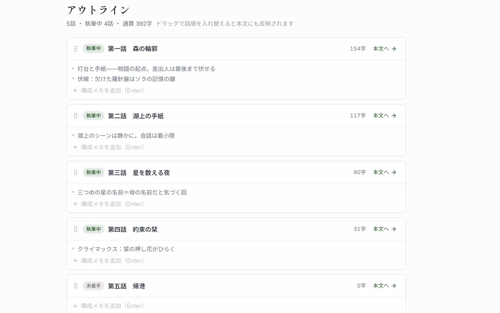
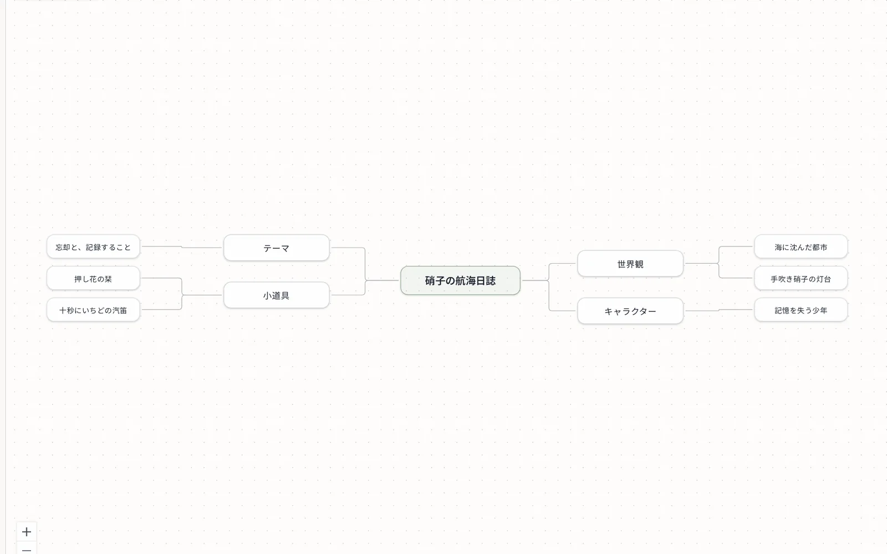
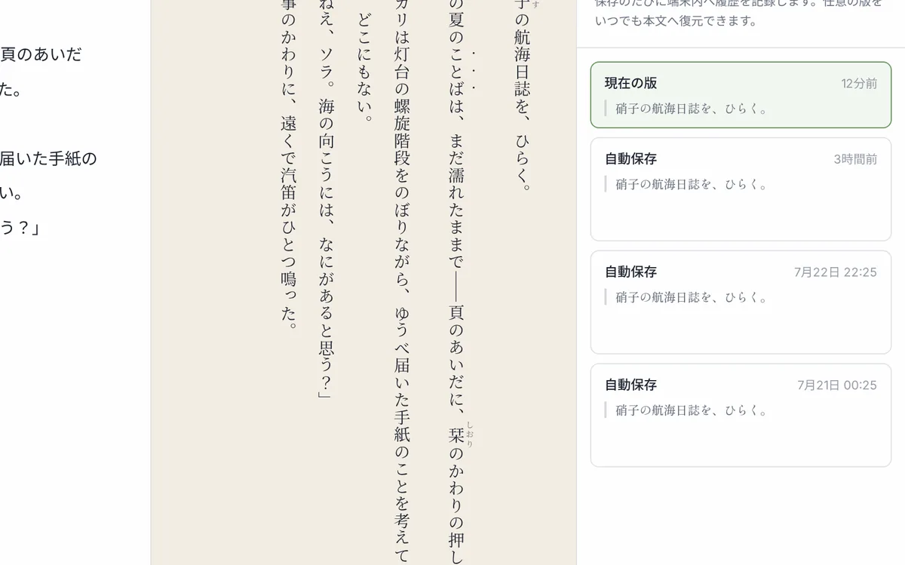

小説、
書いてみよう。
登録もインストールもいりません。ブラウザを開けば、すぐに書き始められます。 縦書きのプレビューやキャラの整理まで、はじめての一作を書ききる道具がそろっています。
アカウント不要 ／ オフラインOK ／ PC・タブレット（横向き）対応
はじめての一作が、書き上がるまで。
書く・築く・編む・続ける・届ける。物語づくりのぜんぶを、五つの章で。

原稿はいつもの横書きで。となりには、ルビも傍点も組み上がった縦書きの頁が、 入力と同時にひらいていきます。自分の文章が「本」になっていく手応えを、書きながらどうぞ。
- ルビは
｜漢字《かんじ》、傍点は《《強調》》と書くだけ - 縦中横（数字の正立）対応・横書き表示にも切替できる
- 一括置換と検索で、キャラ名の変更もひと息
人物、場所、道具。ふくらんでいく設定は、作品ごとの図鑑へ。
本文に [[名前]] と書けば物語と設定がつながり、書きながらいつでも引けます。
- 人物・場所・道具などをカードで整理
- 別名・よみがな・要約・画像もいっしょに
- 本文の参照から、その場で図鑑をひらける




人物の関係は相関図に。話の流れはアウトラインに。ふとした思いつきはマインドマップに。 三つの道具はどれも本文とつながっていて、構想がそのまま原稿へ育ちます。
- 相関図：図鑑のキャラを置いて、線に関係の名前をつける
- アウトライン：本文と双方向同期・ドラッグで話を並べ替え
- マインドマップ：＋を押すだけで枝がのびる
思いつきのメモは、無料のネタ帳からどうぞ。
書いた日は、カレンダーに緑の粒として積もっていきます。 原稿は自動保存で、保存のたびに版履歴が残るから、昨日の自分にいつでも戻れます。 続けることが、いちばんの執筆術だから。
- 連続日数・累計文字数・年間ヒートマップ
- 自動保存＋版履歴（ローカル・セーフティネット）



書き上がったら、ワンクリックで旅立ちの支度を。縦書き EPUB にも、 「小説家になろう」「カクヨム」の記法にも、ルビ・傍点ごと自動変換して書き出せます。
- 縦書き EPUB（電子書籍）
- なろう・カクヨム記法／話ごとのテキスト（ZIP）
- お使いの AI（Claude・Genspark）に読み書きさせて相談もクラウド
書いたものは、あなたのもの。
原稿はあなたの端末に保存。登録もいらず、思い立ったらすぐ書けます。
端末のなかに保存
原稿はブラウザ内（あなたの手元）に保存され、勝手に外部へ送られません。書き出しやバックアップも、必要なときに自分で選べます。
登録もインストールも不要
アカウント登録もアプリのインストールもなし。ページを開けば、その瞬間から書き始められます。
オフラインでも執筆
一度ひらけば、ネットが無くても書き進められます。電車のなかでも、旅先でも。
書くことは、ぜんぶ無料。
まずは無料で、気軽に始めてください。
| できること | フリー¥0・ずっと | クラウド有料（アプリ内で案内） |
|---|---|---|
| 執筆・縦書きプレビュー・図鑑 | ○ | ○ |
| ネタ帳（思いつきメモ） | ○ | ○ |
| 自動保存＋版履歴（端末内） | ○ | ○ |
| なろう・カクヨム・EPUB 書き出し | ○ | ○ |
| 執筆の記録・一括置換 | ○ | ○ |
| ファイルへのバックアップ／取り込み | ○ | ○ |
| アウトライン・相関図・マインドマップ | × | ○ |
| クラウドバックアップ＆復元（暗号化・全データ） | × | ○ |
| 複数端末で同期（続きから） | × | ○ |
| AI に読み書きさせる（Claude・Genspark／MCP） | × | ○ |
よくある質問
本当に無料ですか？
はい。書く・組む・書き出す——執筆に必要な機能はすべて無料で、制限もありません。有料なのは、端末をまたぐクラウドバックアップ、アウトライン・相関図・マインドマップ、AI 接続です。
原稿が消えてしまうことはありませんか？
原稿は端末内の IndexedDB に自動保存され、保存のたびに版履歴が残ります。ブラウザのデータ消去では消えるため、ファイルへのバックアップ（無料）や有料のクラウドバックアップの併用をおすすめします。
スマートフォンで使えますか？
今は PC・タブレット（横向き）向けです。スマホ対応は今後検討していきます。
書いたものを投稿サイトに載せられますか？
はい。「小説家になろう」「カクヨム」の記法にそのまま書き出せます。ルビや傍点も各サイトの記法へ自動変換されます。
話の流れや人物の関係も整理できますか？
クラウドプランでは、アウトライン（話ごとの構成メモ）・相関図（人物の関係図）・マインドマップ（発想の枝分かれ）が使えます。いずれも本文とつながっていて、書きながら構想を育てられます。思いつきのメモだけなら、無料のネタ帳でも始められます。
AI 連携は原稿を学習に使われませんか？
コトノハ-leaf- 自体は AI を内蔵せず、原稿を勝手に外部へ送ることはありません。希望する場合のみ、お使いの AI（Claude・Genspark）から原稿を読み・編集させられます（MCP）。AI の編集は、あなたが「取り込む」まで手元の原稿に反映されないので、主導権は常にあなたにあります。